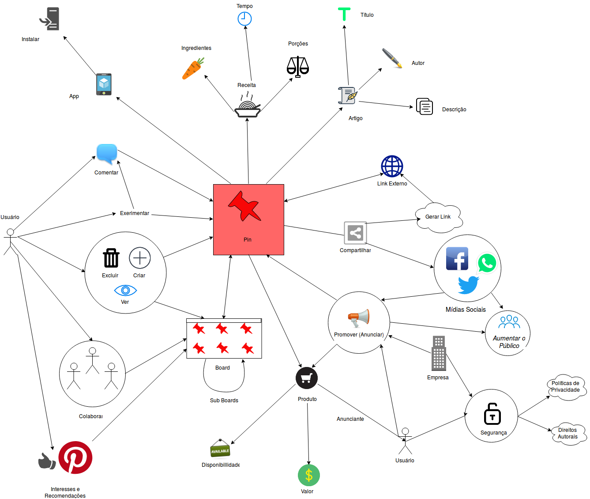
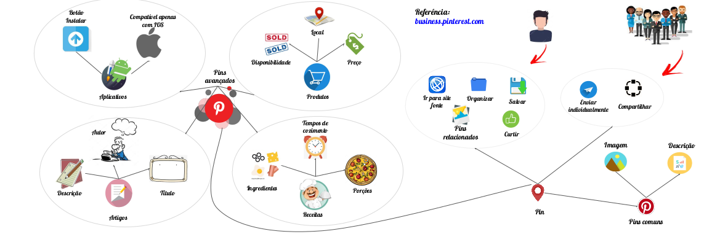
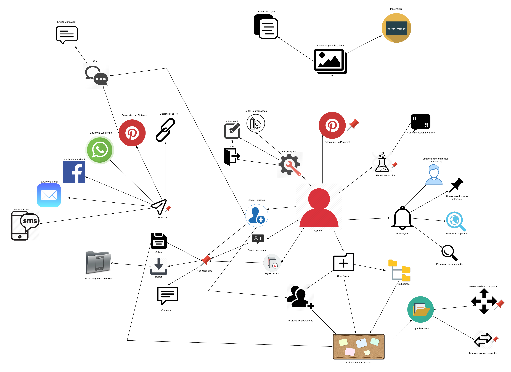
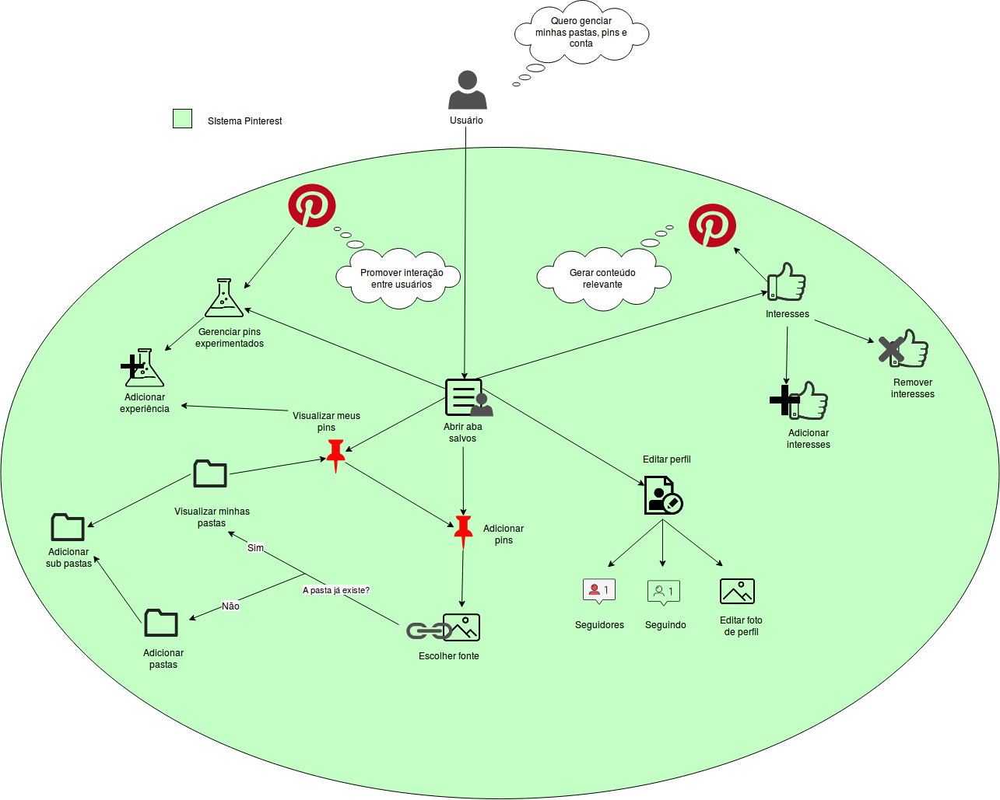
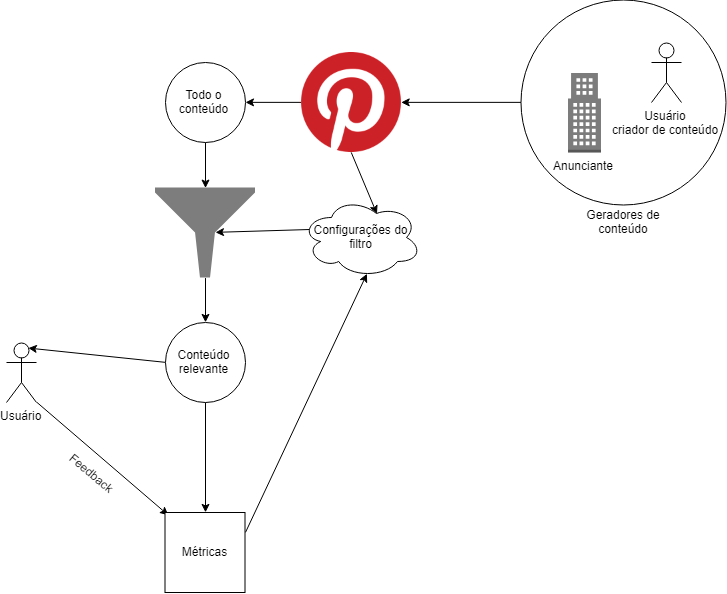
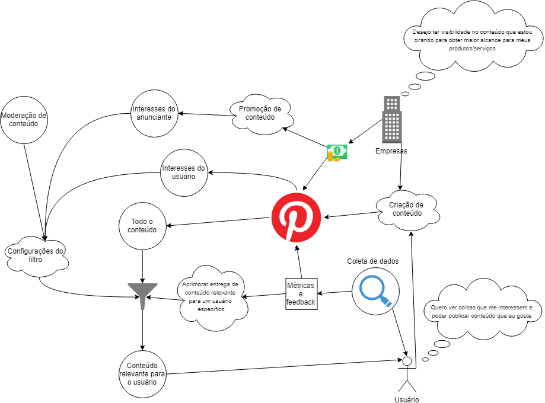

Rich Picture
Introdução
O Rich Picture é uma técnica de requisitos de software, elaborada na fase de pré-rastreabilidade. São desenho feitos a mão ou digitalmente a fim de expressar ideias, que representam um subsistema de um sistema maior. É um artefato considerado informal e muito útil na identificação das partes envolvidas, a fim abrir espaço para discussões e ser uma forma de compreender o problema amplamente.
RP1 - Pin
Rich Picture que descreve todas as ações realizadas referentes á um pin. As ações podem são realizadas pelo usuário, podendo ele ser um consumidor ou anunciante. Os conceitos levados em conta para a elaboração desse rich picture estão dispostos na Argumentação 2. 
RP2 - Pins Especiais
Versão 1.0
Rich Picture que descreve as funcionalidades e recursos dos Pins Especiais. 
Versão 2.0

RP3 - Tipos de Pins
Rich Picture que descreve os tipos de Pins.
Versão 1.0

Versão 2.0

RP4 - Fluxo do Anunciante
Versão 1.0

RP5 - Usuário
Rich Picture com foco no usuário e nas ações que ele pode realizar no sistema.
Versão 1.0

Versão 2.0

RP6 - Aba Salvos
Rich Picture que apresenta as funcionalidades existentes dentro da aba "Salvos".

Versão 2.0

RP7 - Usuário vendedor e Usuário comum
Rich Picture que apresenta a interação do usuário comum com um usuário que desfruta do poder do marketing no Pinterest divulgando seus produtos.
Versão 1.0

Versão 2.0

RP8 - Pinterest e entrega de conteúdo ao Usuário
Rich Picture que apresenta a interação do Pinterest e do usuário no ambito de entrega de conteúdo relevante, com o filtro de conteúdo e o feedback loop de metricas do usuário.
Versão 1.0

Versão 2.0
